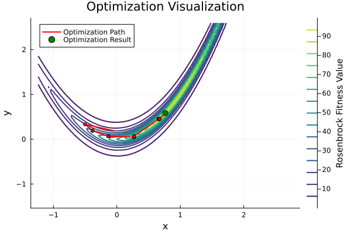

Getting Started with GeneticAlgorithms.jl
Genetic algorithms (GAs) are a class of optimization algorithms inspired by the principles of natural selection and evolution. They are particularly useful for solving complex optimization problems where traditional methods may struggle. In this guide, we'll walk through two examples of using the GeneticAlgorithms.jl package: optimizing the Rosenbrock function and solving a Sudoku puzzle.
Optimization Loop
Genetic algorithms follow an iterative process:
- Initialization - Generate an initial population of candidate solutions.
- Evaluation - Assess the fitness of each candidate.
- Selection - Choose individuals based on their fitness.
- Crossover - Combine selected individuals to create new offspring.
- Mutation - Introduce random variations to maintain diversity.
- Termination - Repeat until a stopping condition is met (e.g., reaching a maximum number of generations).
Solving the Rosenbrock Problem
The Rosenbrock function is a common benchmark for optimization algorithms. It is a non-convex function defined in multiple dimensions, with a global minimum that can be challenging to locate. Below is an example of using a genetic algorithm to find the minimum of the 2D Rosenbrock function.
using GeneticAlgorithms
# Our Genetic Algorithm Configuration
roulette_wheel_selection = RouletteWheelSelection()
single_point_crossover = SinglePointCrossover()
mutation_probability = 0.5
mutation_interval = (-0.5, 0.5)
real_gene_mutation = RealGeneMutation(mutation_probability, mutation_interval)
population_size = 10
chromosome_size = 2 # input size for the 2D Rosenbrock function
init_interval = (-1.0, 1.0) # value range for initial solutions
uniform = RealUniformInitialization(population_size, chromosome_size, init_interval)
# Bringing everything together...
ga_rosenbrock = GeneticAlgorithm(uniform,
rosenbrock_fitness,
roulette_wheel_selection,
single_point_crossover,
real_gene_mutation,
max_generations=100,
save_best=true)
result = optimize(ga_rosenbrock) # performs the optimization steps described above
println(result)
# Visualization
using GeneticAlgorithms.Visualization
visualize_rosenbrock_results(ga_rosenbrock.best_chromosomes, "rbplot.svg")"/home/runner/work/GeneticAlgorithms.jl/GeneticAlgorithms.jl/docs/build/rbplot.svg"
We initialize a genetic algorithm with a population of 10 chromosomes and evolve them using roulette wheel selection, single point crossover, and random mutation operations.
To visualize the results we can use the GeneticAlgorithms.Visualization submodule.
Solving a Sudoku Puzzle
Sudoku is a constraint-satisfaction problem where the objective is to fill a 9×9 grid so that each row, column, and 3×3 subgrid contains the digits 1 through 9 without repetition. Genetic algorithms provide an alternative approach to solving Sudoku by treating each grid as a candidate solution and evolving them towards a valid completion.
using GeneticAlgorithms
using GeneticAlgorithms.Visualization # Only for printing the puzzles
initial_puzzle = [
[5, 3, 0, 0, 7, 0, 0, 0, 0],
[6, 0, 0, 1, 9, 5, 0, 0, 0],
[0, 9, 8, 0, 0, 0, 0, 6, 0],
[8, 0, 0, 0, 6, 0, 0, 0, 3],
[4, 0, 0, 8, 0, 3, 0, 0, 1],
[7, 0, 0, 0, 2, 0, 0, 0, 6],
[0, 6, 0, 0, 0, 0, 2, 8, 0],
[0, 0, 0, 4, 1, 9, 0, 0, 5],
[0, 0, 0, 0, 8, 0, 0, 7, 9]
]
population_size = 20
initStrategy = SudokuInitialization(20, initial_puzzle)
roulette_wheel_selection = RouletteWheelSelection()
single_point_crossover = SinglePointCrossover()
mutation_probability = 0.1
sudoku_mutation = SudokuMutation(mutation_probability, initial_puzzle)
ga = GeneticAlgorithm(initStrategy,
sudoku_fitness,
roulette_wheel_selection,
single_point_crossover,
sudoku_mutation,
elitism=true,
max_generations=1000,
mutation_rate=0.4,
save_best=true)
result = optimize(ga)
println("Initial Sudoku Puzzle:")
print_sudoku(Chromosome(initial_puzzle))
println()
println("Optimized Result:")
print_sudoku(result)
println()
# We logged our best solutions and their fitness scores.
# So we can access the fitness of the result by:
result_fitness = ga.best_fitness[end]
# A solved sudoku has fitness score 162
solved_percentage = round(result_fitness / 162, digits=3) * 100
println("Solved the puzzle $(solved_percentage)%")Initial Sudoku Puzzle:
5 3 0 | 0 7 0 | 0 0 0
6 0 0 | 1 9 5 | 0 0 0
0 9 8 | 0 0 0 | 0 6 0
----------+-----------+----------
8 0 0 | 0 6 0 | 0 0 3
4 0 0 | 8 0 3 | 0 0 1
7 0 0 | 0 2 0 | 0 0 6
----------+-----------+----------
0 6 0 | 0 0 0 | 2 8 0
0 0 0 | 4 1 9 | 0 0 5
0 0 0 | 0 8 0 | 0 7 9
Optimized Result:
5 3 6 | 2 7 8 | 4 9 1
6 4 7 | 1 9 5 | 3 2 8
2 9 8 | 3 4 1 | 7 6 5
----------+-----------+----------
8 9 1 | 7 6 4 | 2 5 3
4 2 6 | 8 5 3 | 9 7 1
7 5 3 | 9 2 1 | 8 4 6
----------+-----------+----------
9 6 1 | 5 3 7 | 2 8 4
8 7 2 | 4 1 9 | 6 3 5
5 4 3 | 6 8 2 | 1 7 9
Solved the puzzle 91.4%In this example, we initialize our genes with the rows the passed initial_puzzle. The zeros are replaced by the missing values of the row. A Sudoku-specific mutation strategy allows the genetic algorithm to shuffle the puzzle rows with the mutation_probability. Combined with the other reproduction operators, we ensure that a row has no duplicates. The fitness function evaluates how close a solution is to a valid Sudoku grid, by counting non-duplicates in 3x3 subgrids and columns.
As we stop our optimization process after 1000 generations, there is no guarantee that the puzzle will be completely solved.